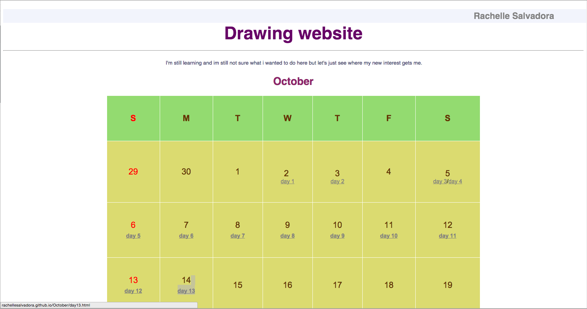

Introduction
If you're in this page, I would assume you wanted to know more about me. So please, take your time and read. This might take 3 minutes or more. I know so many texts looks boring but just let me tell you my story.
Background
I was studying Bachelor of Arts in Advertising before I learnt HTML and CSS. I liked web development initially because it made me do stuff on the web page like embedding, write paragraphs and simplest stuff like that.
To give you an idea of what I'm talking about, you can click the link below:
October 2013 After a few months of studying, I've completed a few online courses, made my own website, web pages and blog up and running. I've also learnt a few CMS, Frameworks and finally learnt programming languages. I also know by this time the importance of knowing the difference of each OS (Operating System), Devices and browsers. I am also the kind of person who tries to save time so I advantage of using a variety of extensions, compilers, applications and figure out what works best for me to maximize productivity
Balancing Myself
I am a team player and an individual worker. How? By learning from my boyfriend and doing projects with his friends, I learnt how to work as a part of a team. Although I am in the Philippines before and they were in Australia we managed to work on the same project through emails, phone calls, personal messages, atlassian project management software, evernote, dropbox, teamviewer, wunderlist, floobits(my favourite) etc. It helped me get used to the daily life of a developer. But by living too far from them, there areå times that I had to figure out the problem myself, and make sensible judgement/decision. I learnt programming languages by myself as well. I'll never forget that computer in a cupboard.
I enjoy front-end more than back-end. I loved the idea that I can make the design of the website into code, make it pretty and do amazing stuff with front-end web development but because I like to challenge myself I learn command line, then git, ssh, database, server-side programming languages, and to wrap it up I also tried to know about the hardware of the computer. Yep. I've clean install an operating system and set up web development environment for more than 20 times now. Including Windows, Ubuntu, Mac, and Linux.
Influence
I was studying Bachelor of Arts in Advertising before I discover web devlopment. All about that techniques and ways of paid communication and selling ideas and products.I knew the importance of users, clients, and consumers. All those knowledge helped me realize the over-all importance of web development.
Works
I am inviting you to check out my github and blog more than anything else because as you are reading this, I'm surely working on a project and/or making a progress.
Behind The Scene
Anyway, here is what I like to do on my free time. I play the guitar, drums, a bit of piano. I am former member of a church theatre in Taguig, Philippines. I like photographs that captures my mind at the moment i see it. I'm practicing Photoshop, GIMP and the like by doing invitations for friends(i.e. wedding).
I like to watch the movies from the books I've already read so I can compare how I imagined it versus how it is in the movie. I listen to a variety of music genre like classical, rock, pop, hip hop, rap, jazz, and alternative.
I like literary art works like poem and novel. I'd like to think that when I am writing a code complement each other, I am writing a poem or a novel. Every line of code has to have a significance or reason why theyre there. That every program is like a book or a poem that ha Therefore I have to write neatly.
I'm always looking forward to new adventures and experiences. The feeling while on top of the mountain reminds me to keep my feet on the ground and live free. If I have the chance, I'll go back to painting and continue widening my perspective. I always try to figure out what I want and find a way how to get it. I do what I love nd I love what I do.
Support or Contact
You can add me on facebook, follow me on twitter, read my blog, connect on my Linked in, and checkout my github profile or send me an email where you can expect my response.